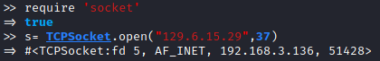
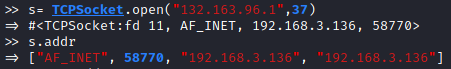
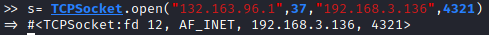
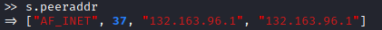
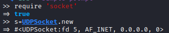
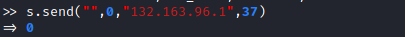

High level sockets
TCPSocket class
doc reference:
https://ruby-doc.org/stdlib-3.0.0/libdoc/socket/rdoc/TCPSocket.htmlOpen a connectionTo use TCPSocket class we need the ‘
socket’ library (require ‘socket’)
Obtain
information about the connections• addr method → obtain information about
local part(our machine) of the stream. It returns an array with [
Address_family, Port, Hostname Numeric_address]
◇ randomly chosen local port 58770 because we have not
specified it when we have opened the connection
 ◇ specify the local port → specify the source_ip & port_ip
• peeraddr method → obtain information
about
remote part(remote machine) of the stream. It returns an array
with [ Address_family, Port, Hostname Numeric_address]

UDPSocket class
doc reference:
https://ruby-doc.org/stdlib-3.0.0/libdoc/socket/rdoc/UDPSocket.htmlCreate a new UDP instanceTo use UDPSocket class we need the ‘
socket’ library (require ‘socket’)
require 'socket'
s=UDPSocket.new
Send an empty datagram to the server (on port 37)
